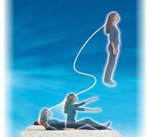

PROJEÇÃO ASTRAL
O que é projeção astral?
Em PROJECIOLOGIA, ciência que estuda os fenômenos das experiências fora do corpo humano, CONSCIÊNCIA significa o princípio inteligente e individualíssimo - o ego, a essência, o self, a alma.
Também chamada de projeção consciente, desdobramento, viagem astral, experiência fora do corpo, viagem extracorpórea, viagem extrafísica, viagem espiritual, desdobramento espiritual etc.
Enquanto o corpo humano permanece dormindo, nossa consciência deixa o corpo físico descansando e sai para dar umas voltinhas. Isso é uma característica de todos os seres humanos, sem exceção. A maioria da população mundial ao acordar não se lembra o que fez, onde e com quem esteve durante este tempo, a maior lembrança delas neste caso é a recordação de sonhos. Já cerca de 5% da população mundial quando sonha sabe que está sonhando (sonho lúcido) e até conseguem manipular as cenas de seus próprios sonhos. E apenas 1% da polução mundial consegue ter uma projeção consciente, seja ela provocada intencionalmente ou não.
Em outras palavras uma projeção astral lúcida (como o próprio nome diz) é quando conseguimos sentir que estamos fora do corpo humano, e ao acordar nos lembrar-mos exatamente onde estivemos com quem e o que fizemos.
Na projeção astral podemos: viajar para qualquer do planeta Terra ou do universo, visitar planos materiais e espirituais (outras dimensões). Se encontrar com ETs, pessoas vivas ou "mortas". Examinar seu corpo por dentro e por fora. (Ver seu coração batendo, o sangue correndo em suas veias ou ver seu corpo adormecido na cama), alcançar o auto-conhecimento, além de poder atravessar objetos sólidos e voar livremente pelos céus.
|  |
Como a Projeção Astral ocorre?
A projeção astral ocorre quando os corpos/veículos de manifestação da consciência entram em descoincidência. Isso normalmente acontece quando estamos dormindo ou cochilando. Por exemplo: você já teve a sensação de estar fora de seu corpo, ou de estar caindo, ou de acordar e não conseguir mexer um único músculo. Quando isto acontece é porque os veículos de manifestação da sua consciência ou estão se unindo ou se separando (estado de descoincidência).
DICA IMPORTANTE: Se você acordar no meio da noite e não conseguir mexer seu corpo, e nem gritar para pedir ajuda (este fenômeno é chamado de CATALEPSIA PROJETIVA), não se preocupe pois isso é normal. Nesse momento você tem duas opções:
1ª opção. – É só se acalmar que em um breve tempo você voltará a ter o controle total sobre seu corpo novamente, se quiser é só tentar mover alguma parte de seu corpo aos poucos, como um dedo por exemplo.
2ª opção. – Neste raro momento você pode aproveitar para sair do seu corpo e ter assim uma projeção astral. É só se acalmar também e tentar sentir o seu corpo espiritual saindo do corpo material.
O que são os veículos de manifestação da consciência?
No nosso universo existem várias dimensões: a física, a espiritual, entre outras. Nossa consciência (ego) possui um “corpo” específico para atuar em cada uma dessas dimensões. São eles:
1.Soma
2.Holochacra
3.Psicossoma
4.Mentalsoma
Definições:
1.Soma:
É o veículo que a consciência precisa para se manifestar na Dimensão Física, ou seja, é o seu corpo humano.
2.Holochacra:
É o veículo energético da consciência. Ele é constituído por todos os chacras. É também
conhecido como duplo etérico. A sua dimensão é a energética.
3.Psicossoma:
É o Veículo que é a duplicata do soma, conhecido também como corpo astral, corpoemocional ou perispírito. A sua dimensão é a Extrafísica- plano astral, mundo dos espíritos.
4.Mentalsoma:
É o Veículo que não tem forma, chamado também de corpo do discernimento, corpo
mental. A sua dimensão é a dimensão mental.
Quando a consciência está na vigília física ordinária (quando estamos acordados), os Veículos de Manifestação da Consciência estão todos alinhados ocupando um mesmo espaço-tempo.
Então resumindo, os veículos de manifestação da consciência são ligados assim:
Soma > cordão de prata > Psicossoma > cordão de ouro > Mentalsoma.
O CORDÃO DE PRATA é uma concentração de energia sob a forma de um cordão que conecta o corpo etéreo ao corpo físico. O clarividente o enxerga com cor prateada. À noite, durante o sono, deixamos o corpo físico e viajamos, por quilômetros e quilômetros, no mundo astral. E o que nos permite fazer isso é o fato de o corpo astral – aquele empreende a viagem – ser conectado ao corpo físico por essa linha da vida, por esse cordão. Quando chega a hora da morte física, o cordão de prata rompe-se e o corpo etéreo é liberado. E o CORDÃO DE OURO também é um elemento energético que mantém o mentalsoma conectado ao psicossoma.
O cordão de prata na Bíblia:
Lembra-te também do teu Criador nos dias da tua mocidade, antes que venham os maus dias, e cheguem os anos em que dirás: Não tenho prazer neles; antes que se escureçam o sol e a luz, e a lua, e as estrelas ... porque o homem se vai à sua morada eterna, e os enlutados andarão rodeando pela praça; antes que se rompa a corda de prata, e se quebre o cálice de ouro, e se despedace a jarra junto à fonte, e se desfaça a roldana junto ao poço, e o pó volte para a terra, como o era, e o espírito volte a Deus, que o deu. Vaidade de vaidades, diz o pregador, tudo é vaidade.
(Eclesiastes 12:1-8)
Se durante uma viagem astral você ficar com medo de alguma coisa, é só pensar em retornar ao seu soma que o cordão de prata o “puxa de volta” no mesmo instante. Normalmente qualquer sensação de medo que você sentir já o trará de volta.
AMPARADORES
São os nossos espíritos protetores (também chamados de anjos da guarda), são seres extra-físicos que nos auxiliam e amparam em nossas projeções astrais.
 |
Estes ajudantes ou amparadores estão sempre prontos a ajudar às pessoas bem intencionadas em suas projeções astrais. A realização de viagens astrais assistidas por amparadores envolve muitas vantagens para o projetor iniciante. Aqueles seres que habitam o outro lado são experts em sua área. Sabem manipular a energia de forma magistral e já conhecem todas as dificuldades inerentes à saída do corpo. Conhecem os erros comuns de todos os principiantes e nos protegem e auxiliam quando encontramos com espíritos negativos.
DICA: Antes de tentar uma projeção astral aprenda o máximo possível sobre a mesma, pois várias coisas podem acontecer enquanto você estiver projetado(a), e nesta hora você deve saber o que acontece e como agir. Aqui no Brasil há vários institutos com cursos e livros para ajudar você a conseguir ter uma projeção astral e aprender mais sobre o assunto.(Veja em dicas de sites).
Outra dica importantíssima é você aprender a controlar suas energias, e aprender sobre o funcionamento especifico de cada chacra. Pois é através do domínio energético que você conseguirá ter projeções lúcidas consecutivas e aprender a se defender quando necessário, estando projetado ou não.
Veja neste site em "Energia", um exercício para alcançar o domínio energético.
Formas de se alcançar uma projeção consciente:
- Saturar a sua mente durante o dia com a intenção de se projetar. Você pode começar pensando assim: "Eu estou acordado(a) ou dormindo?" durante várias vezes ao dia, até você se pegar respondendo: "Eu estou acordado(a) mas o meu corpo continua dormindo!".
- Usar sua força de vontade.
- Manipular suas energias para entrar em Estado Vibracional. Pois quando você acelera as suas energias, seus corpos de manifestação da consciência entram em descoincidência, gerando assim a projeção astral.
- Fora estas opções há várias outras técnicas para conseguir realizar uma projeção lúcida. Como o conteúdo sobre o assunto é muito extenso eu paro por aqui, se você quiser saber mais é só procurar!